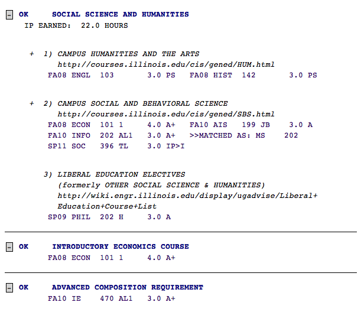
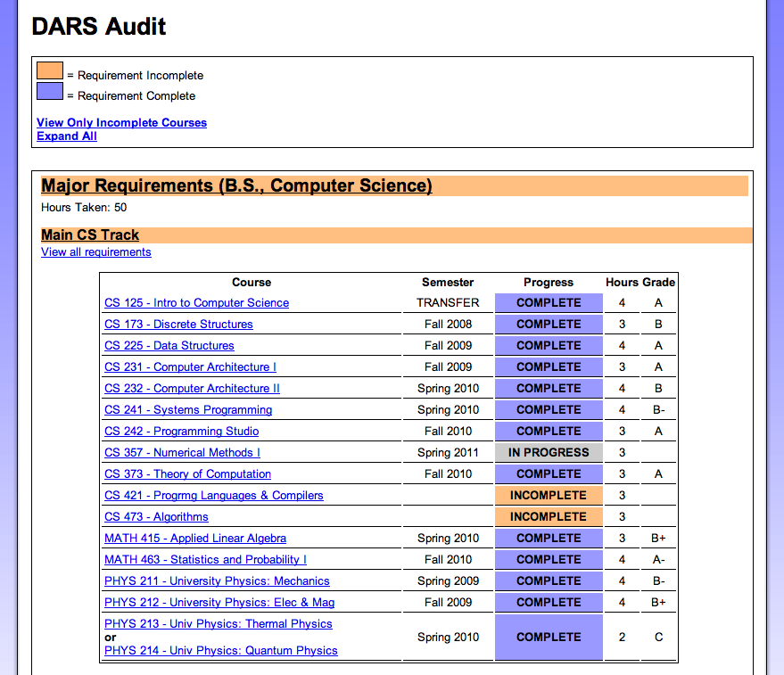

DARS
How can a University website be made more useful and usable?
Background
Dates: January - May 2011
Advisor: Prof. Wai-Tat Fu
For one of my human-computer interaction courses, students were asked to complete a system redesign project. I worked with three other University of Illinois students on redesigning the university's Degree Audit Report System (DARS). DARS is used by students and advisors to show which courses a student has completed fulfill which degree requirements.
Process
We sought to improve the usability of DARS by the following means:
- Survey - We surveyed students from across the university on their reasons for using DARS and what barriers to use the system presented
- Contextual Inquiry - We conducted contextual inquires with students and asked them to complete several benchmark tasks using the DARS system. We discovered issues with excessive scrolling, lack of feedback, and mismatches between user's mental models of the system model.
- Prototype - We created an HTML prototype of a new DARS system addressing the three main issues identified in our surveys and contextual inquiries.
Results
- The information architecture of DARS required serial search rather than affording pop-out search when looking for unfulfilled requirements
- DARS did not promote exploration and learning of even its most basic functionality as many students did not know these functions existed
- DARS did not leverage connections to related university resources
Prototype
Our HTML prototype may be accessed at http://www.maxpappas.com/psyc429/dars.html
Images

Current DARS Audit Style

Proposed Dars Audit Style